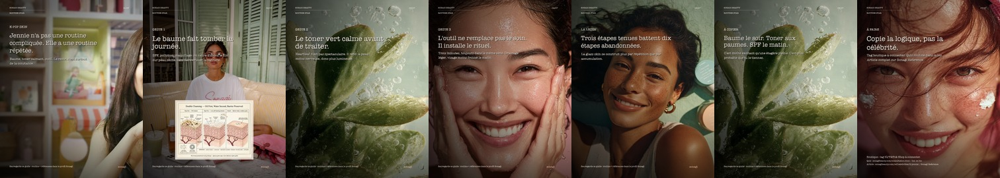
Celebrity routine: Jennie. Source: Sonagi Reference celebrity article.
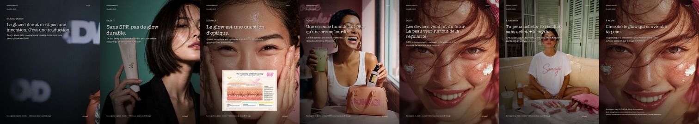
Celebrity routine: Hailey Bieber. Source: Sonagi Reference celebrity article.
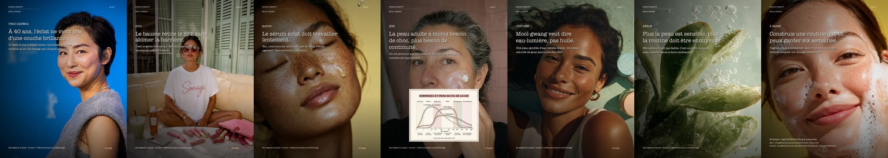
Celebrity routine: Greta Lee. Source: Sonagi Reference celebrity article.
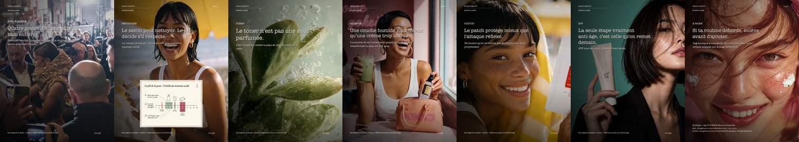
Celebrity routine: Zendaya. Source: Sonagi Reference celebrity article.
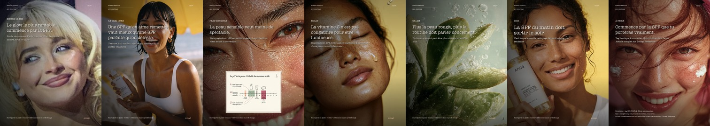
Celebrity routine: Sabrina Carpenter. Source: Sonagi Reference celebrity article.
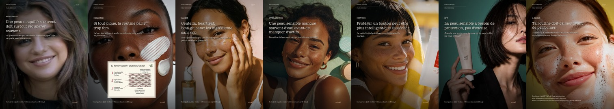
Celebrity routine angle: sensitive skin / barrier logic using Sonagi Reference celebrity assets.
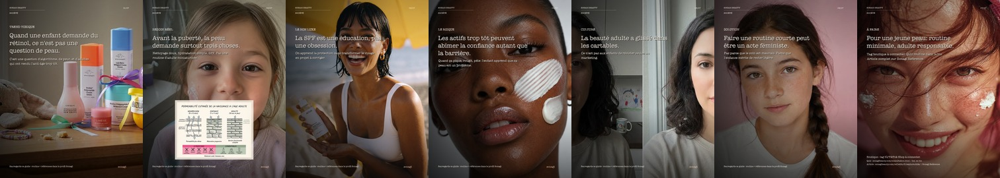
Societal trend: Gen Alpha, anti-aging anxiety, routine boundaries.
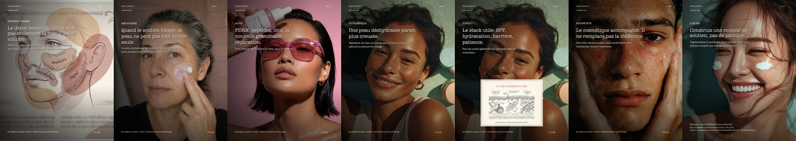
Societal trend: GLP-1, facial volume loss, K-beauty support.
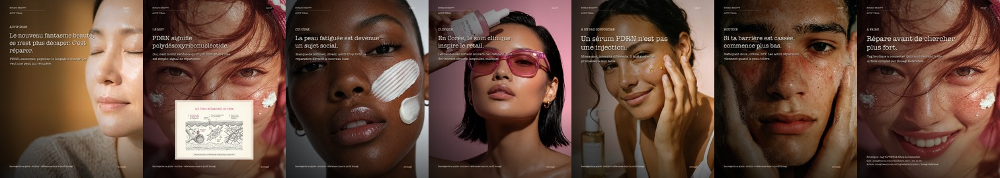
Trend: PDRN / salmon DNA / repair culture.
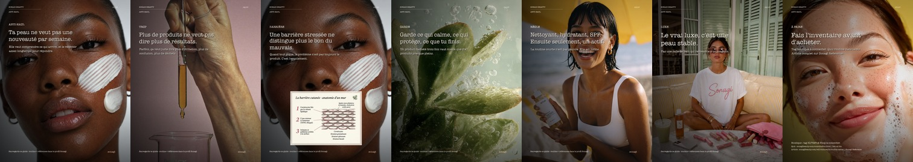
Societal trend: underconsumption, deinfluencing, skinimalism.
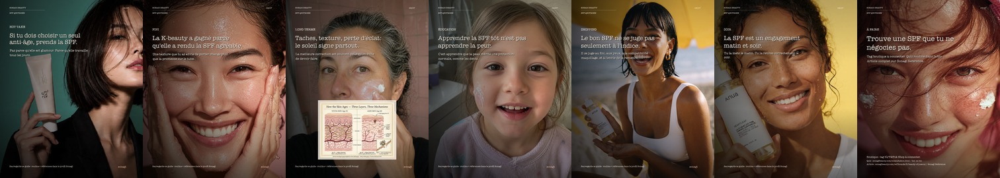
Trend: SPF as daily skincare, not beach product.
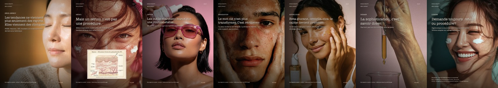
Trend: clinic-to-retail actives, repair, devices, realistic claims.